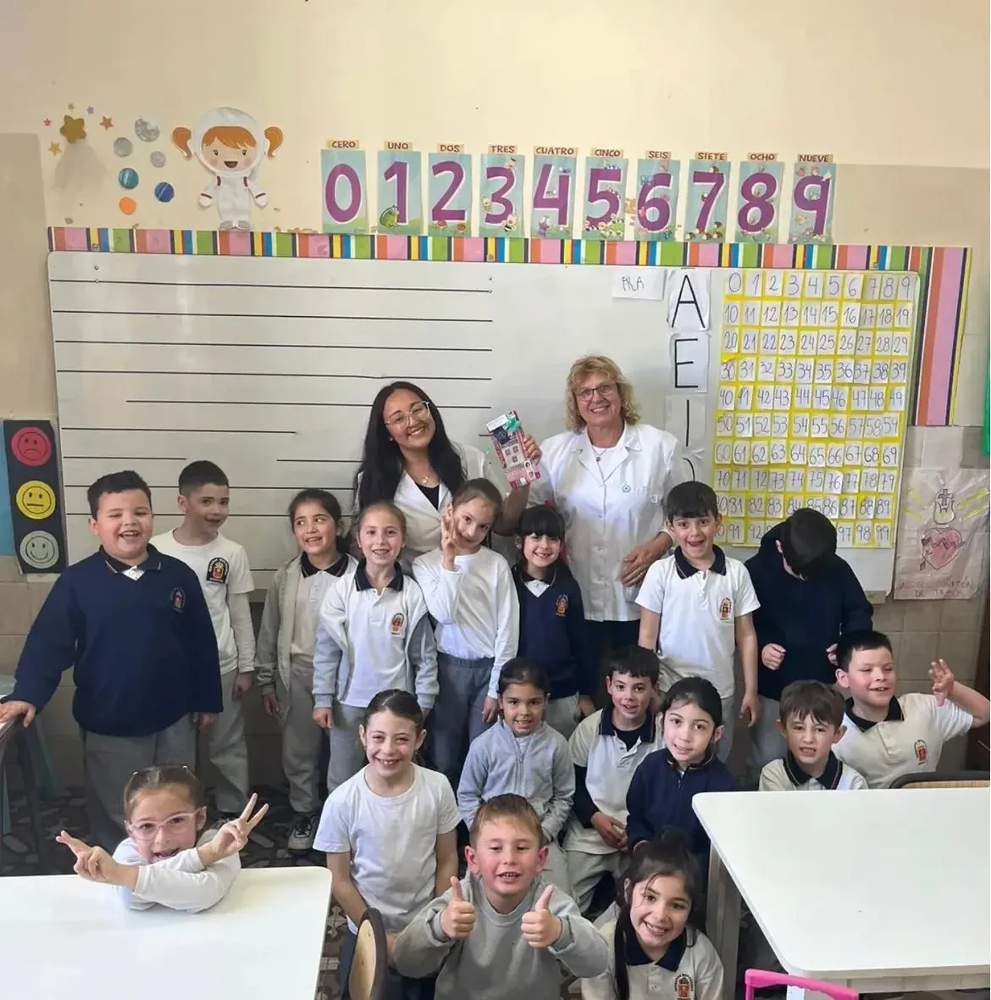

01
Acompañamiento personalizado
Respetamos los tiempos y las formas de aprender de cada niño, acompañando su trayectoria de manera cercana.

Acompañamos a cada niño en una etapa fundamental de su vida, con una educación que combina aprendizaje, confianza, valores y comunidad.
Una educación que busca que cada niño piense, confíe en sí mismo, descubra sus capacidades y construya aprendizajes que pueda llevar consigo toda la vida.
Respetamos los tiempos y las formas de aprender de cada niño, acompañando su trayectoria de manera cercana.
Proyectos, experiencias y propuestas que despiertan la curiosidad, la creatividad, el pensamiento crítico y las ganas de aprender.
Construimos un vínculo cercano con las familias porque creemos que acompañar juntos hace la diferencia.
La propuesta del Nivel Primario desarrolla capacidades, habilidades, actitudes y valores, fortaleciendo competencias fundamentales para desenvolverse en la sociedad y en la vida.
La formación incluye Matemática, Lengua, Ciencias, Inglés, Computación, Educación Física, Artes Visuales, ESI, ERE y Música , integrando los aprendizajes con experiencias concretas y significativas.
Trabajamos junto a toda la comunidad educativa desde el compromiso con una educación liberadora y con el carisma mercedario.
Queremos que nuestros estudiantes aprendan a pensar, desarrollen confianza en sí mismos, descubran sus capacidades, aprendan a convivir y valoren la solidaridad.
La comunidad está integrada por directivos, docentes, familias y equipos de acompañamiento, trabajando para sostener cada trayectoria educativa.
Directora Roxana Calleri y Vicedirectora Claudia Bertinotti. El equipo incluye docentes de los seis grados, Educación Física, Inglés, Música, Informática y Artes Visuales, junto al personal de apoyo.
El Servicio de Orientación Escolar está conformado por psicóloga, psicopedagoga y maestra de educación especial.
12 divisiones: seis grados con dos divisiones cada uno (A por la mañana y B por la tarde), aulas con pizarrón, proyector y Smart TV, dos salas de computación, biblioteca, sala de Artes Visuales, SUM y patio.
Turno mañana:
7:45 a 12:00 hs.
Turno tarde:
13:30 a 17:45 hs.
Contamos con aulas equipadas, dos salas de computación, sala de Artes Visuales, biblioteca, patio, SUM, sala de docentes, baños, dirección, administración, kiosco saludable y espacio de fotocopiadora/venta.
Uniforme institucional para niñas y niños, equipo de Educación Física y bolsa de higiene.
Roxana Calleri
· Directora
Claudia Bertinotti
· Vicedirectora
Tel.:
421440 · 3576 15514247
Correo:
primario@colegiocervellon.edu.ar
Dirección:
9 de Julio 465
Visitá nuestra escuela y conocé nuestros espacios, propuestas y experiencias.
Contacto ↗